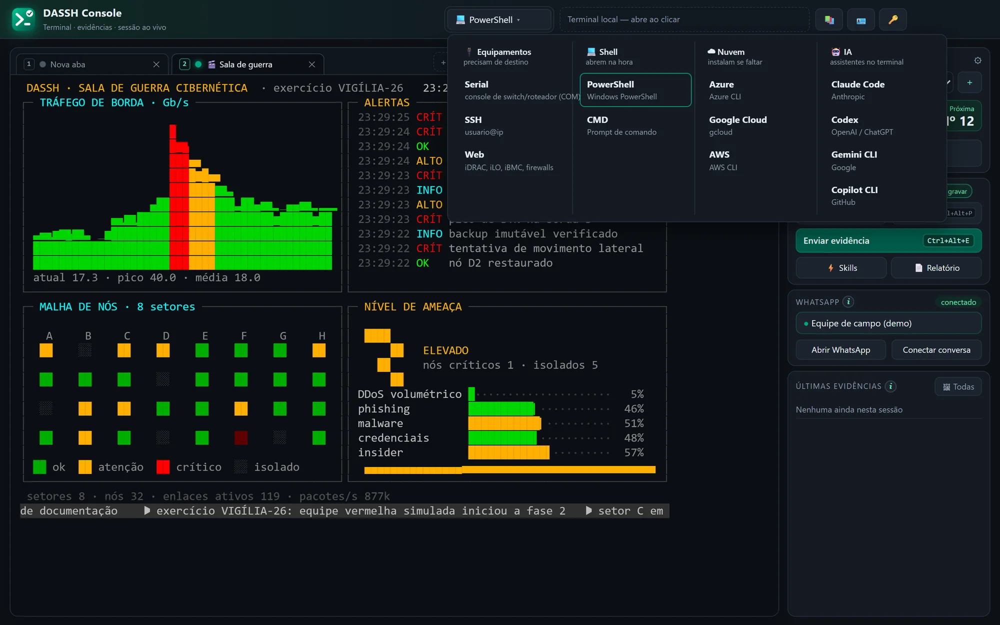
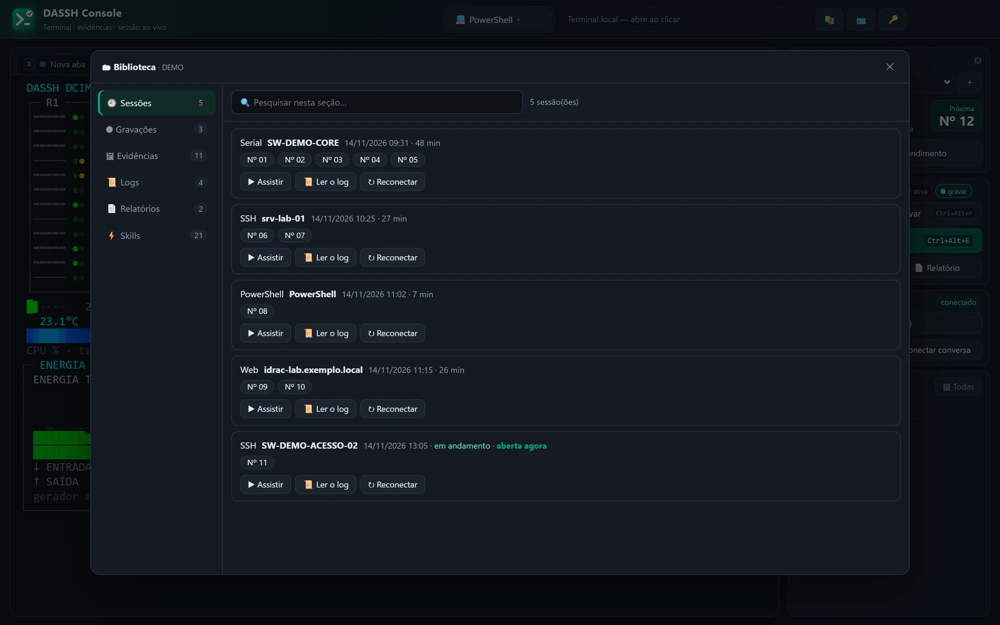
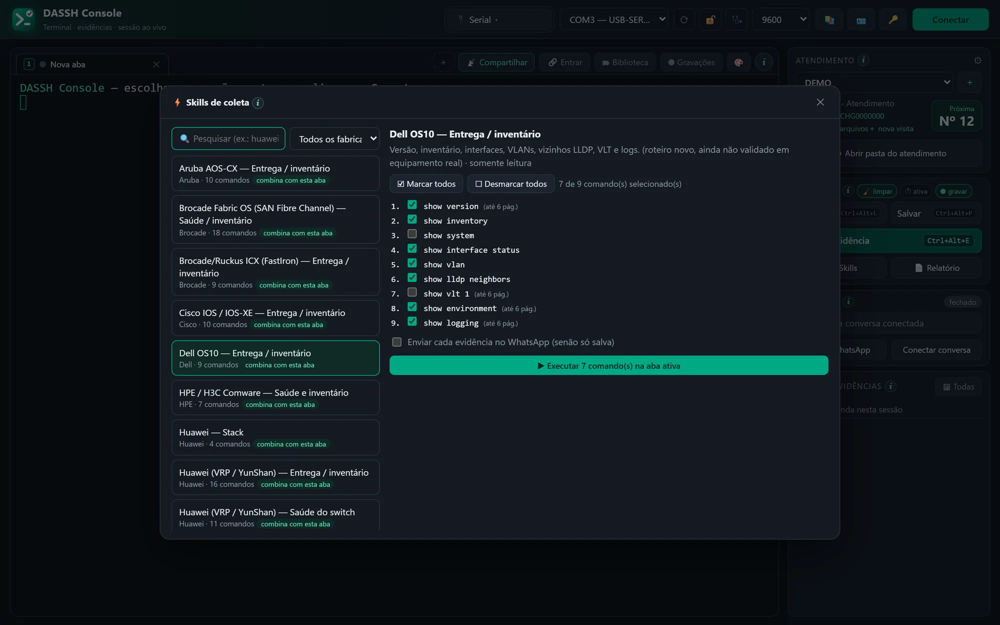
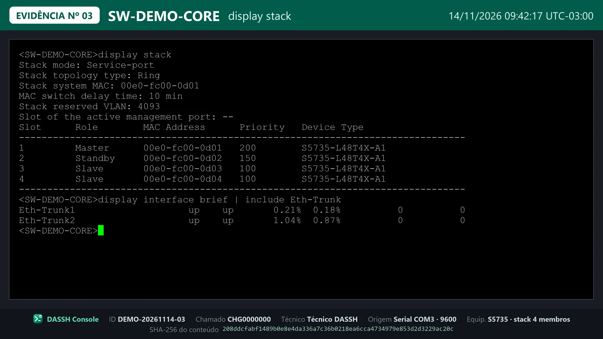
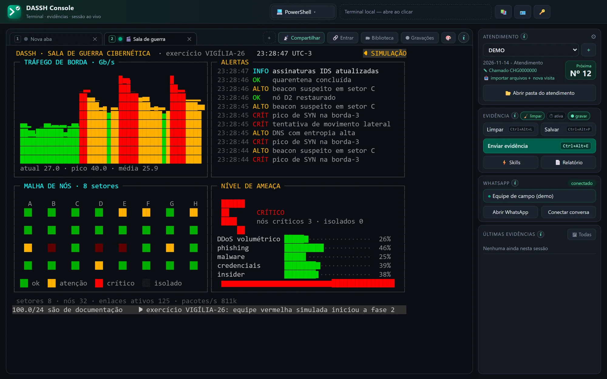

Rede, servidores, nuvem, banco de dados, mainframe, segurança ou IA: o DASSH Console junta Serial, SSH, PowerShell, interfaces Web, Azure, Google Cloud, AWS e assistentes de IA numa mesma tela. Cada comando pode virar evidência com SHA-256, cada sessão vira conhecimento pesquisável e o seu time acompanha ao vivo, cifrado de ponta a ponta, do computador ou do celular.
Windows 10 ou 11 (64 bits) · não precisa ser administrador · versão portátil (um .exe) (em breve) · plataforma web com o DASSH Conector (Windows, macOS, Linux) · versão de testes

Do suporte N1 ao arquiteto, de quem cuida de um switch a quem administra milhares de instâncias.
Console serial, SSH e Skills para Cisco, Huawei, HPE, Aruba, Juniper, Fortinet, MikroTik e mais, com topologia desenhada da coleta.
PowerShell, CMD e SSH em abas, iDRAC, iLO e outras gerências web abertas dentro do app.
Azure CLI, gcloud e AWS CLI prontos, com evidência do que foi alterado em cada ambiente.
Sessões de administração registradas e consultas importantes guardadas como evidência com hash.
Claude Code, Codex, Gemini CLI e Copilot CLI ao lado da sessão real, com o resultado registrado.
Cada passo do teste autorizado gravado, com cadeia de custódia para o relatório ao cliente.
Acesso por terminal a ambientes críticos, com registro fiel de tudo o que foi executado.
Resposta a incidente com o time assistindo ao vivo e a linha do tempo pronta para o pós-mortem.
O mesmo padrão de entrega em toda a equipe, para mostrar ao cliente exatamente o que foi feito.
Por que entregar a sua área de trabalho inteira, com seus arquivos, e-mails e outros clientes, para uma sessão de suporte remoto? No DASSH você compartilha só o shell que importa: quem entra vê apenas os caracteres daquela aba, ao vivo e cifrados de ponta a ponta.
Hoje ele se espalha entre PuTTY, MobaXterm, SecureCRT, prints, bloco de notas e conversas. O DASSH substitui tudo isso, importa as suas sessões dessas ferramentas em um clique e deixa o que foi feito registrado, provado e reaproveitável, para quem fez, para o time e para quem precisa confiar no resultado.
O mesmo fluxo para qualquer especialidade: do primeiro comando à entrega.
Escolha o destino no seletor (equipamento, servidor, shell, nuvem ou IA) e clique em Conectar. A senha pode vir do cofre.
Rode uma ⚡ Skill ou trabalhe livre. Ctrl+Alt+E transforma qualquer saída em evidência numerada e verificável.
Gere o 📄 Relatório, envie ao time e encontre tudo depois na 🗂 Biblioteca: sessões, gravações, logs e evidências.
Tudo abaixo já funciona, no app e na plataforma web.
Serial, SSH, PowerShell e CMD em abas independentes, cada uma com o seu contexto, tema e destino de envio.
A interface de gerência abre dentro do app, com subabas. A evidência pode ser da página inteira, não só do pedaço visível.
Abas prontas para Azure CLI, Google Cloud (gcloud) e AWS CLI. Se a ferramenta não estiver instalada, o app instala na primeira vez.
Claude Code, Codex, Gemini CLI e Copilot CLI em abas, ao lado da sessão real. Cada uma usa a sua conta com o fornecedor.
Coleta e configuração guiadas para Huawei, Cisco, HPE, Fortinet, Juniper, Aruba, Dell, MikroTik, ESXi, Brocade, Windows, Linux e outros. Você escolhe cada comando.
Sessões, gravações, evidências, logs, relatórios, equipamentos, cofre e Skills num só lugar, com busca, filtros e importação de PuTTY, MobaXterm, SecureCRT e mais 8 ferramentas.
Imagem padronizada em 4K com ID único, data e fuso, chamado, responsável, origem e o SHA-256 do conteúdo.
PDF com capa, evidências, logs anexados, hashes e manifesto de custódia. A topologia (stack, LLDP, Eth-Trunk) é montada a partir da própria coleta.
Convide por código. Quem assiste abre uma página no navegador, sem instalar. Você aprova cada entrada e só passa o teclado se quiser.
Senhas cifradas no seu computador e protegidas por um PIN próprio. O login é preenchido sem a senha aparecer na tela ou na evidência.
Evidências e relatório vão por WhatsApp, Telegram ou e-mail, em ordem, com uma fila que não perde nada se a conexão cair.
A mesma conta DASSH no site, no app e no celular. Seus dados de trabalho continuam no seu computador.
Pareie uma vez e opere o seu computador pelo celular, com a interface completa e canal cifrado.
A sessão é gravada e pode ser assistida depois no player, com o log em texto gerado a partir da gravação.
Cada sessão aparece com o destino, a duração e as evidências que gerou. Dali você assiste à gravação, lê o log com busca, abre o relatório ou reconecta no mesmo destino. Equipamentos, cofre, Skills e importação de outras ferramentas também moram ali, no mesmo padrão.
Tudo é lido das pastas do atendimento no seu computador. Nada sobe para a nuvem.

Escolha a Skill do fabricante e marque só o que precisa, ou use Marcar todos. O app executa, pagina até o fim e salva cada saída como evidência numerada. As Skills de configuração fazem perguntas, mostram a prévia e só aplicam com a sua confirmação.
Algumas Skills ainda estão marcadas como “não validadas em equipamento real”, e o app avisa quando é o caso.

Mesmo formato em qualquer ambiente: número, destino, comando, data com fuso, chamado, responsável, origem e o hash SHA-256 do conteúdo. O mesmo hash aparece no manifesto de custódia do relatório.

Sala de guerra, mapa de ataques, telemetria de datacenter, falha de stack e outras. São só animação: não conectam em nada, não executam comandos e usam dados fictícios. Servem para feira, sala de espera e treinamento.
Esc encerra a demonstração. Qualquer tecla acelera.

Sem instalar o app: a plataforma web usa um conector leve no seu computador para falar com terminais e portas.
Em DASSH Conector, escolha Windows, macOS ou Linux. Abra uma vez e ele passa a ser chamado pela página.
Entre em plataforma web e clique em Abrir quando o navegador perguntar pelo DASSH Conector.
Crie a conta DASSH com e-mail e senha. A mesma conta vale no site, no app e no celular.
▶ Assistir ao vivo sem instalar
Você entra como observador. O teclado só é passado com autorização. O conteúdo é cifrado de ponta a ponta (AES-256-GCM, chaves combinadas com X25519): o servidor que retransmite as mensagens não consegue ler o terminal. Cada código abre a sua própria sessão.
No seu computador. Evidências, logs, gravações e relatórios ficam na pasta de trabalho, e as senhas do cofre ficam cifradas localmente. A conta DASSH na nuvem guarda só a sua identidade e preferências. Só sai do computador o que você mandar: envios para o time, a sessão ao vivo (cifrada de ponta a ponta) e o que você digitar nas abas de nuvem ou de IA, que vai para o respectivo fornecedor.
Nenhum software é. O que fazemos: senhas protegidas pelo Windows, sessão ao vivo cifrada de ponta a ponta com aprovação de cada participante, cofre com PIN próprio, câmera e microfone nunca usados, e hash SHA-256 para detectar alteração em evidências. Mantenha o sistema atualizado e use o DASSH só em ambientes que você tem autorização para operar.
O instalador ainda não tem assinatura digital de código, por isso aparece o aviso do SmartScreen. O relatório em PDF pode ser assinado dentro do app com uma assinatura eletrônica (certificado próprio, gerado no seu computador): qualquer alteração posterior no PDF invalida a assinatura. Ela não é ICP-Brasil nem gov.br. Se o cliente exigir assinatura qualificada, ela pode ser feita depois, no mesmo PDF.
Ela foi desenhada para isso: formato fixo, ID único, data com fuso, origem da conexão, hash SHA-256 e manifesto de custódia no relatório, seguindo as boas práticas da ISO/IEC 27037. Quem decide se atende a uma norma ou contrato é quem audita, caso a caso.
Sim. A plataforma web é a mesma interface do app e usa o DASSH Conector, leve, no seu computador para falar com a porta serial e os terminais. Funciona no Windows, macOS e Linux.
As abas abrem as ferramentas oficiais de linha de comando (Claude Code, Codex, Gemini CLI, Copilot CLI, Azure CLI, gcloud, AWS CLI). Cada uma exige a sua própria conta e segue os termos e preços do fornecedor. O DASSH não revende nenhuma delas.
Não. A instalação é só para o seu usuário. O app só pede permissão do Windows em ações específicas (por exemplo, instalar o driver do cabo console ou adicionar um IP temporário) e sempre avisa antes.
Use o botão 🩺 ao lado da porta COM: o app diagnostica o cabo e o driver e indica a correção. O 🔓 libera uma porta que ficou presa em outro programa.
O instalador e a versão portátil estão em revisão final e voltam em breve. Enquanto isso, use a plataforma web com o Conector: é a mesma interface.
Abra a plataforma web agora ou acompanhe uma sessão ao vivo pelo navegador.